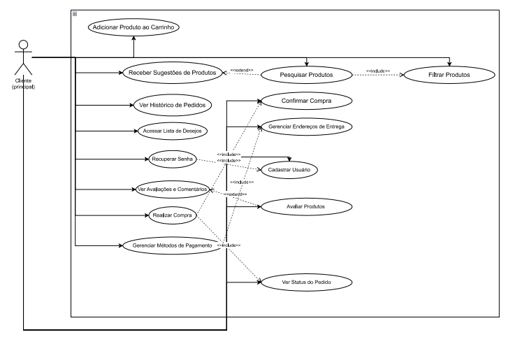

Diagrama e Especificação de Casos de Uso¶
Introdução¶
O modelo de casos de uso representa de forma estruturada as principais interações entre os usuários e o sistema, descrevendo os atores e as funcionalidades envolvidas. O sistema escolhido por nossa equipe foi o sistema de compra e venda Shoppee com o propósito de facilitar a compreensão dos requisitos funcionais e não funcionais.
Metodologia¶
O modelo de caso de uso foi escolhido para que seja de facil entendimento o fluxo de funcionamento do sistema, utilizando apenas um ator que representa o cliente principal e quais suas principais ações dentro do sistema.
Diagramas de Caso de Uso¶

Figura 1: Diagrama 1
Etapas do Processo¶
-
Elicitação de Requisitos
Identificação das necessidades dos usuários e definição dos requisitos funcionais e não funcionais. -
Análise e Priorização
Classificação dos requisitos conforme impacto e importância para o sistema. -
Modelagem dos Casos de Uso
Criação de tabelas e diagramas descrevendo as ações do usuário e as respostas do sistema. -
Validação e Revisão
Análise do modelo para garantir coerência, completude e alinhamento aos objetivos do projeto.
Essa metodologia garante clareza na comunicação entre desenvolvedores, analistas e stakeholders, facilitando a implementação do sistema.
| ID | Caso de Uso | Descrição | Atores Envolvidos |
|---|---|---|---|
| UC01 | Cadastro de Usuário | Permite que compradores criem uma conta no sistema | Usuário |
| UC02 | Login e Recuperação de Senha | Permite login e recuperação de senha via link no e-mail | Usuário |
| UC03 | Pesquisa de Produtos | Permite buscar produtos por nome, categoria ou filtros | Usuário |
| UC04 | Visualizar Detalhes de Produto | Mostra informações completas e avaliações de um produto | Usuário |
| UC05 | Gerenciar Carrinho | Permite adicionar, remover e visualizar produtos no carrinho | Usuário |
| UC06 | Finalizar Compra | Permite concluir uma compra com métodos de pagamento e confirmação | Usuário |
| UC07 | Acompanhar Pedido | Permite visualizar o status e histórico dos pedidos | Usuário |
| UC08 | Avaliar Produto | Permite inserir avaliações após compras concluídas | Usuário |
| UC09 | Recomendações Personalizadas | Sugere produtos com base em buscas e compras anteriores | Sistema |
| UC10 | Gerenciar Endereços | Permite cadastrar e editar endereços de entrega | Usuário |
| UC11 | Exibir Termos e Políticas | Exibe os termos de uso e política de privacidade | Usuário |
| ID | Descrição | Requisitos Relacionados | Impacto no Sistema | Prioridade |
|---|---|---|---|---|
| NFC01 | Suporte a múltiplos dispositivos (desktop e mobile) | RNF04 | Garante usabilidade em várias plataformas | Alta |
| NFC02 | Alta disponibilidade e desempenho com muitos usuários | RNF03 | Evita lentidão e falhas com acessos simultâneos | Alta |
| NFC03 | Conformidade com a LGPD e segurança de dados | RNF05 | Protege dados pessoais e sensíveis dos usuários | Alta |
| NFC04 | Acessibilidade para pessoas com deficiência visual | RNF02 | Garante inclusão e usabilidade universal | Média |
| NFC05 | Tempo de resposta e carregamento rápido | RNF01, RNF06 | Melhora a experiência do usuário | Média |
| NFC06 | Suporte a múltiplos idiomas | RNF07 | Expande o alcance global do sistema | Baixa |
| Campo | Descrição |
|---|---|
| UC08 | Avaliar Produto |
| Descrição | Permite que o usuário insira avaliações e comentários sobre produtos adquiridos, atribuindo notas e feedbacks que ficam visíveis para outros compradores. |
| Atores | - Usuário - Sistema de e-commerce |
| Pré-condições | 1. O usuário está autenticado no sistema. 2. O usuário possui pelo menos uma compra concluída do produto que deseja avaliar. |
| Ação | O usuário acessa a página de um produto já comprado e envia uma avaliação, incluindo nota (por exemplo, de 1 a 5 estrelas) e comentário. O sistema valida e registra a avaliação, atualizando a média geral do produto. |
| Fluxo principal | - O usuário acessa o histórico de pedidos e seleciona um produto comprado. - O usuário escolhe a opção “Avaliar Produto”. - O sistema exibe o formulário de avaliação (nota e comentário). - O usuário preenche e confirma o envio. - O sistema valida os dados e grava a avaliação. - O sistema atualiza e exibe a média geral de avaliações do produto. |
| Fluxo alternativo | - O usuário tenta avaliar um produto que ainda não comprou. - O sistema exibe uma mensagem: “Você só pode avaliar produtos que já comprou.” - O usuário envia o formulário incompleto (sem nota ou comentário). - O sistema solicita o preenchimento dos campos obrigatórios antes de prosseguir. |
| Fluxo de exceção | - Ocorre falha na comunicação com o servidor ao salvar a avaliação. - O sistema exibe uma mensagem de erro: “Não foi possível registrar sua avaliação. Tente novamente mais tarde.” |
| Pós-condições | A avaliação é armazenada no banco de dados e vinculada ao produto e ao usuário. A média de avaliações do produto é atualizada e exibida para os demais usuários. |
UC04 – Lembretes de Revisão de Conteúdos¶
| Campo | Descrição |
|---|---|
| UC07 | Acompanhar Pedido |
| Descrição | O sistema permite que o usuário visualize o status e o progresso de seus pedidos, recebendo atualizações automáticas sobre cada etapa da entrega. |
| Ator | Usuário, Sistema de notificações |
| Pré-condições | 1. O usuário possui pedidos registrados no sistema. 2. Está logado em sua conta. |
| Ação | O sistema exibe a linha do tempo de entrega e envia notificações automáticas conforme o status do pedido muda (ex.: “Pedido enviado”, “Em transporte”, “Entregue”). |
| Fluxo principal | - O usuário acessa a página “Meus Pedidos”. - O sistema busca os dados de entrega dos pedidos. - O sistema exibe o status atual (ex.: “Em transporte”). - O sistema envia notificações automáticas a cada atualização de status. |
| Fluxo alternativo | - O usuário cancela o pedido antes do envio. - O sistema atualiza o status para “Cancelado” e interrompe notificações. |
| Fluxo de exceção | - Falha na comunicação com o servidor de entrega. - O sistema exibe a mensagem: “Não foi possível atualizar o status do pedido neste momento.” |
| Pós-condições | O usuário é informado sobre o andamento de seu pedido e pode acompanhar todas as etapas da entrega. |
UC05 – Configuração da Forma de Notificação¶
| Campo | Descrição |
|---|---|
| UC10 | Gerenciar Endereços |
| Descrição | O usuário acessa o perfil e gerencia os endereços de entrega, podendo cadastrar, editar ou remover endereços preferenciais para futuras compras. |
| Ator(es) | - Usuário - Sistema de gerenciamento de endereços |
| Pré-condições | 1. O usuário está autenticado no sistema. 2. O sistema possui acesso ao banco de dados de endereços cadastrados. |
| Ação | O usuário adiciona, edita ou exclui endereços de entrega conforme sua necessidade. O sistema salva as alterações e atualiza o endereço padrão. |
| Fluxo principal | - O usuário acessa “Minha Conta” e seleciona “Endereços”. - O sistema exibe os endereços cadastrados. - O usuário escolhe adicionar, editar ou excluir um endereço. - O sistema salva as alterações realizadas e define o endereço padrão. |
| Fluxo alternativo | - O usuário não informa todos os campos obrigatórios ao adicionar um novo endereço. - O sistema solicita o preenchimento dos campos obrigatórios antes de salvar. |
| Fluxo de exceção | - Ocorre falha na conexão com o banco de dados. - O sistema exibe mensagem de erro: “Não foi possível salvar as alterações. Tente novamente mais tarde.” |
| Pós-condições | Os endereços do usuário são atualizados, e o endereço padrão será utilizado em futuras compras e entregas. |
| Campo | Descrição |
|---|---|
| UC06 | Notificação de Prazo de Entrega |
| Descrição | O sistema envia alertas automáticos ao aluno quando uma atividade está próxima do prazo final. |
| Ator | Aluno, Sistema de notificações |
| Pré-condições | 1. O aluno possui atividades cadastradas com prazo de entrega. 2. Está logado no sistema. |
| Ação | O sistema verifica prazos e envia alertas automáticos próximos da data limite. |
| Fluxo principal | - O sistema verifica atividades com prazo próximo. - Gera alerta de prazo. - Envia notificação ao aluno. |
| Fluxo alternativo | - O aluno já entregou a atividade. - O sistema não envia mais alertas. |
| Fluxo de exceção | - Falha no envio da notificação. - O prazo da atividade é alterado após o envio do alerta. |
| Pós-condições | O aluno recebe lembrete sobre a entrega das atividades no tempo adequado. |
| Campo | Descrição |
|---|---|
| UC09 | Recomendações Personalizadas |
| Descrição | O sistema analisa o histórico de buscas, visualizações e compras do usuário para sugerir produtos relevantes e personalizados, aumentando a chance de novas compras. |
| Ator | - Usuário - Sistema de recomendação inteligente |
| Pré-condições | 1. O usuário possui histórico de navegação ou compras no sistema. 2. O sistema tem acesso autorizado aos dados de comportamento e preferências do usuário. |
| Ação | O sistema coleta e analisa dados de comportamento do usuário, identifica padrões de interesse e exibe recomendações de produtos relacionadas. |
| Fluxo principal | - O usuário acessa a página inicial ou um produto específico. - O sistema coleta dados de navegação e histórico de compras. - O sistema aplica algoritmos de recomendação para identificar preferências. - O sistema exibe sugestões personalizadas de produtos relacionados. |
| Fluxo alternativo | - O usuário é novo e ainda não possui histórico de navegação. - O sistema exibe produtos populares ou promoções gerais até coletar dados suficientes. |
| Fluxo de exceção | - Falha na análise de dados ou indisponibilidade do módulo de recomendação. - O sistema exibe mensagem padrão: “Não foi possível gerar recomendações no momento.” |
| Pós-condições | O usuário visualiza recomendações personalizadas com base em seu perfil e comportamento, melhorando a experiência de compra. |
| Campo | Descrição |
|---|---|
| UC06 | Finalizar Compra |
| Descrição | O sistema processa o pedido do usuário, verificando o carrinho, endereço de entrega e método de pagamento, concluindo a compra com a geração da confirmação e do comprovante. |
| Ator | - Usuário - Sistema de Pagamento - Sistema de Processamento de Pedidos |
| Pré-condições | 1. O usuário possui produtos válidos no carrinho. 2. O sistema de pagamento e o banco de dados de pedidos estão operando normalmente. |
| Ação | O sistema valida as informações do pedido, processa o pagamento e confirma a compra, gerando o número do pedido e a nota fiscal. |
| Fluxo principal | - O usuário acessa o carrinho e seleciona “Finalizar Compra”. - O sistema solicita o endereço e método de pagamento. - O usuário confirma as informações. - O sistema processa o pagamento e registra o pedido. - O sistema exibe mensagem de sucesso com o número do pedido e previsão de entrega. |
| Fluxo alternativo | - O pagamento é recusado. - O sistema exibe mensagem: “Pagamento não aprovado. Tente outro método.” - O usuário cancela a operação antes da confirmação. - O sistema mantém o carrinho sem alterações. |
| Fluxo de exceção | - Falha na comunicação com o gateway de pagamento. - O sistema exibe mensagem: “Erro ao processar a compra. Tente novamente mais tarde.” |
| Pós-condições | O pedido é registrado com sucesso, e o usuário recebe confirmação da compra e do pagamento. |
| Campo | Descrição |
|---|---|
| UC05 | Gerenciar Carrinho |
| Descrição | O sistema monitora as ações do usuário em relação aos produtos adicionados, removidos ou alterados no carrinho, atualizando automaticamente os valores e quantidades e gerando um resumo final antes da compra. |
| Ator | - Usuário - Sistema de Gerenciamento de Carrinho |
| Pré-condições | 1. O usuário possui sessão ativa no sistema. 2. Existem produtos disponíveis no catálogo. |
| Ação | O sistema registra as ações do usuário (adicionar, remover ou atualizar produtos) e gera um resumo atualizado do carrinho, com valores e quantidades totais. |
| Fluxo principal | - O usuário acessa o carrinho de compras. - Adiciona, remove ou altera a quantidade de produtos. - O sistema atualiza automaticamente o subtotal e o valor total. - O sistema exibe um resumo do carrinho com todos os produtos e valores. |
| Fluxo alternativo | - O usuário tenta adicionar um produto fora de estoque. - O sistema exibe mensagem: “Produto indisponível.” - O usuário remove todos os produtos do carrinho. - O sistema exibe mensagem: “Seu carrinho está vazio.” |
| Fluxo de exceção | - Falha na atualização do carrinho. - O sistema exibe mensagem: “Não foi possível atualizar o carrinho. Tente novamente mais tarde.” |
| Pós-condições | O sistema mantém o carrinho atualizado conforme as ações do usuário, garantindo a integridade das informações para a finalização da compra. |
| Campo | Descrição |
|---|---|
| UC03 | Pesquisa de Produtos |
| Descrição | Permite que o usuário realize buscas por produtos utilizando nome, categoria ou filtros específicos, exibindo resultados relevantes e organizados de acordo com os critérios selecionados. |
| Ator | - Usuário |
| Pré-condições | 1. O usuário deve estar autenticado ou em sessão ativa. 2. O sistema deve possuir produtos cadastrados no banco de dados. |
| Ação | O sistema processa a consulta do usuário, filtra os produtos correspondentes e exibe os resultados de acordo com os parâmetros informados. |
| Fluxo principal | - O usuário acessa a barra de pesquisa ou a página de categorias. - O usuário insere o termo de busca ou seleciona filtros (ex.: preço, categoria, marca). - O sistema busca no banco de dados os produtos correspondentes. - O sistema exibe os resultados da pesquisa com imagem, nome, preço e avaliação. |
| Fluxo alternativo | - Nenhum produto encontrado: se a busca não retornar resultados, o sistema exibe a mensagem “Nenhum produto encontrado para sua pesquisa.” - Falta de conexão temporária: o sistema exibe “Não foi possível carregar os resultados. Verifique sua conexão e tente novamente.” |
| Fluxo de exceção | Falha crítica de pesquisa: erro ao acessar o banco de dados ou ao processar os filtros. O sistema exibe a mensagem “Ocorreu um erro ao realizar a pesquisa. Tente novamente mais tarde.” e registra o erro em log. |
| Pós-condições | O sistema exibe os produtos encontrados conforme os critérios de busca informados pelo usuário. |
| Campo | Descrição |
|---|---|
| UC12 | Notificar alunos sobre atividades próximas do prazo de entrega |
| Descrição | O sistema envia notificações automáticas aos alunos informando sobre atividades com prazo de entrega próximo, ajudando no gerenciamento do tempo e na organização das tarefas. |
| Ator | - Sistema de Notificações - Aluno |
| Pré-condições | 1. O aluno deve estar matriculado na disciplina e possuir atividades registradas com prazos definidos. 2. O sistema de notificações deve estar configurado e ativo. 3. O aluno deve ter autorizado o recebimento de notificações. |
| Ação | O sistema verifica periodicamente as atividades com prazos próximos e envia notificações de alerta aos alunos. |
| Fluxo principal | - O sistema verifica a base de dados em busca de atividades com prazos próximos (ex: 24h antes da entrega). - O sistema identifica os alunos inscritos nessas atividades. - O sistema envia notificações automáticas (push, e-mail ou dentro da plataforma). - O aluno recebe a notificação e visualiza o alerta na interface. |
| Fluxo alternativo | - O aluno desativou notificações: o sistema ignora o envio para esse usuário. - O aluno já entregou a atividade: o sistema não envia o alerta. |
| Fluxo de exceção | - Falha no envio de notificações por erro no servidor de mensagens. O sistema registra o erro no log e tenta reenviar em 30 minutos. - Falha de rede impede o recebimento do alerta. O sistema armazena a notificação e reenviará quando a conexão for restabelecida. |
| Pós-condições | O aluno é informado sobre atividades com prazos próximos, reduzindo o risco de atrasos. |
UC12 – Organização do Banco de Questões por Conteúdo¶
Requisito Associado: RF32 – O banco de questões deve estar separado por conteúdo.
| Campo | Descrição |
|---|---|
| UC03 | Pesquisa e Filtragem de Produtos |
| Descrição | Permite ao usuário buscar produtos e aplicar filtros por categoria, preço, marca ou outros atributos, exibindo apenas os itens correspondentes aos critérios selecionados. |
| Ator | - Usuário - Sistema de Catálogo de Produtos |
| Pré-condições | 1. O usuário deve estar autenticado ou ter acesso à plataforma. 2. Existem produtos cadastrados no sistema com categorias e atributos definidos. 3. O sistema de catálogo está funcionando corretamente. |
| Ação | O usuário seleciona filtros de pesquisa, e o sistema exibe apenas os produtos que atendem aos critérios escolhidos. |
| Fluxo principal | - O usuário acessa a página de pesquisa ou catálogo. - O sistema exibe opções de filtro (categoria, preço, marca, avaliação, etc.). - O usuário seleciona os filtros desejados. - O sistema atualiza a visualização, exibindo apenas os produtos que correspondem aos filtros aplicados. |
| Fluxo alternativo | - Nenhum produto corresponde aos filtros aplicados. - O sistema exibe a mensagem: “Nenhum produto encontrado para os critérios selecionados.” |
| Fluxo de exceção | - Falha na conexão com o banco de dados ou no processamento de filtros. - O sistema exibe mensagem: “Não foi possível carregar os produtos. Tente novamente mais tarde.” |
| Pós-condições | O usuário visualiza uma lista de produtos filtrada conforme os critérios selecionados, facilitando a escolha e compra. |
UC13 – Acesso ao Painel de Desempenho Centralizado¶
Requisito Associado: RF34 – A integração deve reduzir o esforço de professores e monitores, centralizando informações sobre atividades e desempenho.
| Campo | Descrição |
|---|---|
| UC07 | Acompanhar Pedido |
| Descrição | Permite que o usuário visualize em um painel centralizado todas as informações sobre seus pedidos, incluindo status, histórico de alterações, prazos de entrega e notificações de envio. |
| Ator | - Usuário - Sistema de Pedidos - Sistema de Notificações |
| Pré-condições | 1. O usuário possui pedidos registrados no sistema. 2. O sistema de pedidos e de envio de notificações estão funcionando corretamente. 3. O usuário está autenticado na plataforma. |
| Ação | O sistema coleta dados de diferentes módulos (status do pedido, rastreio da entrega, histórico de alterações) e exibe tudo em um painel unificado para o usuário. |
| Fluxo principal | - O usuário acessa a seção “Meus Pedidos” ou um pedido específico. - O sistema busca dados de status, histórico de alterações e rastreio da entrega. - A interface exibe um painel centralizado mostrando todas as informações do pedido (ex.: status atual, etapas anteriores, previsão de entrega). |
| Fluxo alternativo | - Um pedido ainda não possui informações completas de rastreio. - O sistema exibe as informações disponíveis e uma mensagem: “Rastreamento não disponível no momento”. |
| Fluxo de exceção | - Falha na integração com algum módulo de pedidos ou rastreio. - O sistema exibe os dados que conseguiu carregar e a mensagem: “Algumas informações do pedido não puderam ser carregadas”. |
| Pós-condições | O usuário visualiza todas as informações de seus pedidos de forma centralizada, facilitando o acompanhamento e reduzindo consultas dispersas. |
| Campo | Descrição |
|---|---|
| UC09 | Recomendações Personalizadas |
| Descrição | O sistema analisa o comportamento de navegação e histórico de compras do usuário, sugerindo produtos relevantes de forma proativa para aumentar a probabilidade de novas compras. |
| Ator | - Usuário - Sistema de Recomendação Inteligente |
| Pré-condições | 1. O usuário está logado na plataforma. 2. Existem produtos cadastrados com histórico de vendas e atributos suficientes para análise. 3. O sistema de recomendação está ativo e integrado ao catálogo de produtos. |
| Ação | O sistema identifica produtos relacionados ao interesse atual do usuário e apresenta recomendações em destaque na interface. |
| Fluxo principal | - O usuário acessa a página inicial ou uma página de produto. - O sistema analisa comportamento de navegação e histórico de compras. - O sistema exibe sugestões de produtos relacionados com mensagens como “Produtos que você pode gostar”. - O usuário clica na sugestão. - O sistema redireciona o usuário para a página do produto recomendado. |
| Fluxo alternativo | - O usuário ignora ou fecha as sugestões. - O sistema continua exibindo recomendações de forma dinâmica sem interromper a navegação. |
| Fluxo de exceção | - Nenhum produto relevante é encontrado para o perfil do usuário. - O sistema exibe produtos populares ou em promoção como alternativa. - Falha na geração das recomendações: o sistema registra o erro e mantém a interface padrão. |
| Pós-condições | O usuário visualiza produtos sugeridos de forma personalizada, aumentando o engajamento e a probabilidade de compra. |
Referências¶
Lucid Software Português. Tutorial de Caso de Uso UML. Youtube, 25 abr. 2019. Disponível em: https://youtu.be/ab6eDdwS3rA?si=geKJuyxRkgBXmeJE. Acesso em: 10 outubro 2025.
Histórico de versão¶
| Versão | Data | Descrição | Autor(es) | Revisor |
|---|---|---|---|---|
| 1.0 | 17/10/2025 | Conclusão do arquivo casos_de_uso.md | Moisés | Gabriel |